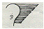
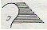
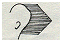
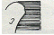
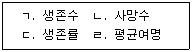

미용사(일반) (2008-03-30 기출문제)
1과목: 미용이론
1. 턱에는 어두운 파운데이션(foundation)을 바르고, 코에는 밝은 파운데이션으로 하이라이트(highlight)효과를 주는 화장법이 가장 적합한 얼굴은?
- 튀어나온 턱과 작은 코를 가진 얼굴
- 작은 턱과 큰 코를 가진 얼굴
- 작은 턱과 작은 코를 가진 얼굴
- 튀어나온 턱과 큰 코를 가진 얼굴
(정답률: 83%)

2. 다음의 헤어커트(hair cut)모형 중 후두부에 무게감을 가장 많이 주는 것은?




(정답률: 66%)
3. 미용사가 미용을 시술하기 2전 구상을 할 때 가장 우선적으로 고려해야 할 것은?
- 유행의 흐름 파악
- 손님의 얼굴형 파악
- 손님의 희망사항 파악
- 손님의 개성 파악
(정답률: 70%)
4. 현대미용에 있어 1920년대에 최초로 단발머리형을 함으로써 우리나라 여성들의 머리형에 혁신적인 변화를 일으키게 된 사람은?
- 이숙종
- 김활란
- 김상진
- 오엽주
(정답률: 88%)
5. 빗의 기능과 가장 거리가 먼 것은?
- 모발의 고정
- 아이롱 시의 두피보호
- 디자인 연출시 쉐이핑(shaping)
- 모발 내 오염물질과 비듬제거
(정답률: 61%)
6. 두발 커트 시 두발 끝⅓정도를 테이퍼링하는 것은?
- 노멀 테이퍼
- 딥 테이퍼
- 엔드 테이퍼
- 보스 사이드 테이퍼
(정답률: 84%)
7. 폭이 넓고 부드럽게 흐르는 버티컬 웨이브를 만들고자 할 때 휭거 웨이브와 핀컬을 교대로 조합하여 만든 웨이브는?
- 리지컬 웨이브
- 스킵웨이브
- 플래트컬 웨이브
- 스윙 웨이브
(정답률: 54%)
8. 사각형 얼굴에 대한 화장법으로 잘못된 것은?
- 이마의 상부와 턱의 하부를 진하게 표현한다.
- 눈썹은 크게 활 모양으로 그려준다.
- 둥근 느낌이 드는 풍만한 입술로 표현해 준다.
- 이마의 각진 부분은 두발형으로 감춰주는 것이 좋다.
(정답률: 49%)
9. 고대 중국 미용술에 관한 설명 중 틀린 것은?
- 기원전 2200년경 하나라 시대에 분이 사용되었다.
- 눈썹 모양은 십미도라고 하여 열 종류의 대체로 진하고 넓은 눈썹을 그렸다.
- 액황은 입술에 바르고 홍장은 이마에 발랐다.
- 입술화장은 희종, 소종(서기 874~890년)때에는 붉은 것을 바른 것을 미인이라 평가했다.
(정답률: 57%)
10. 두발의 물리적인 특성에 있어서 두발을 잡아 당겼을 때 끊어지지 않고 견디는 힘을 나타내는 것은?
- 두발의 질감
- 두발의 밀도
- 두발의 대전성
- 두발의 강도
(정답률: 80%)
11. 컬의 줄기 부분으로서 베이스(base)에서 피보트(pivot)점까지의 부분을 무엇이라 하는가?
- 포인트
- 스템
- 루프
- 융기점
(정답률: 69%)
12. 퍼머넨트 웨이빙 시 두발을 구성하고 있는 케라틴의 시스틴 결합은 무엇이라 하는가.?
- 티오글리 콜산
- 취소산칼륨
- 과산화수소
- 브롬산나트륨
(정답률: 71%)
13. 콜드 웨이브(cold wave)퍼머넌트시술 시 두발의 진단 항목과 거리가 가장 먼 것은?
- 경모 혹은 연모 여부
- 발수성모 여부
- 두발의 성장주기
- 염색모 여부
(정답률: 79%)
14. 헤어 블리치(hair bleach) 시 밝기가 너무 어두운 경우의 원인과 가장 거리가 먼 것은?
- 블리치제가 마른 경우
- 프로세싱(processing)시간을 짧게 잡았을 경우
- 블리치제에 물을 희석해 사용하는 경우
- 과산화수소수의 볼륨이 높을 경우
(정답률: 53%)
15. 미용도구와 그에 따른 용도가 옳게 연결된 것은?
- 네일 버퍼 - 손톱을 문질러서 광택을 내는 데 사용
- 큐티클 니퍼즈 - 손톱을 자르는 가위
- 네일 파일 - 큐티클 리무버를 바르는 도구
- 폴리시 리무버 - 상조피 제거액
(정답률: 59%)
16. 멋내기 염색방법에 속하지 않는 것은?
- 헤어 티핑
- 헤어 스트리킹
- 헤어스템핑
- 헤어 스트레이트
(정답률: 76%)
17. 첨형 손톱의 매니큐어(manicure) 방법으로 가장 적합한 것은?
- 모든 매니큐어 방법이 적합한 형태의 손톱이다.
- 손톱의 양 측면과 반월을 남겨 손톱이 가늘게 보이도록 한다.
- 반월 혹은 프리 엣지(free edge) 중 어느 한쪽 또는 양쪽을 남긴다.
- 손톱의 양 측면과 반월만 매니큐어 한다.
(정답률: 34%)
18. 헤어 컬러링한 고객이 녹색 모발을 자연갈색으로 바꾸려고 할 때 가장 적합한 방법은?
- 3%과산화수소를 약 3분간 작용시킨 뒤 주황색으로 컬러링 한다.
- 빨간색으로 컬러링 한다.
- 3%과산화수소로 약 3분간 작용시킨 후 보라색으로 컬러링 한다.
- 노란색을 띄는 보라색으로 컬러링 한다.
(정답률: 65%)
19. 다음 중 자외선이 인체에 미치는 부정적인 영향은?
- 비타민 D 형성반응
- 살균효과
- 홍반반응
- 강장효과
(정답률: 74%)
20. 두발의 70%이상을 차지하며, 멜라닌 색소와 섬유질 및 간충 물질로 구성되어 있는 곳은?
- 모표피(cuticle)
- 모수질(medulla)
- 모피질 (cortex)
- 모낭(follicle)
(정답률: 67%)
2과목: 공중보건학
21. 간흡충(간디스토마)에 관한 설명으로 틀린 것은?
- 인체 감염형은 피낭유충이다.
- 제 1 중간숙주는 왜우렁이이다.
- 인체 주요 기생부위는 간의 담도이다.
- 경피 감염한다.
(정답률: 43%)
22. 호흡기계 전염병에 해당되지 않는 것은?
- 인플루엔자
- 유행성 이하선염
- 파라티푸스
- 홍역
(정답률: 45%)
23. 불쾌지수를 산출하는데 고려해야 하는 요소들은?
- 기류와 복사열
- 기온과 기습
- 기압과 복사열
- 기온과 기압
(정답률: 83%)
24. 세계 보건기구에서 정의하는 보건행정의 범위에 속하지 않는 것은?
- 산업발전
- 모자보건
- 환경위생
- 전염병관리
(정답률: 73%)
25. 아래 보기 중 생명표의 표현에 사용되는 인자들을 모두 나열한 것은?

- ㄱ, ㄴ, ㄷ
- ㄱ, ㄷ
- ㄴ, ㄹ
- ㄱ, ㄴ, ㄷ, ㄹ
(정답률: 58%)
26. 일반적으로 식품의 부패(putrefaction)란 무엇이 변질된 것인가?
- 비타민
- 탄수화물
- 지방
- 단백질
(정답률: 68%)
27. 다음 중 이, 미용업소에서 시술과정을 통하여 전염될 수 있는 가능성이 가장 큰 질병 2가지는?
- 뇌염, 소아마비
- 피부병, 발진티푸스
- 결핵, 트라코마
- 결핵, 장티푸스
(정답률: 61%)
28. 직업병과 관련 직업이 옳게 연결된 것은?
- 근시안 - 식자공
- 규폐증 - 용접공
- 열사병 - 채석공
- 잠함병 -방사선기사
(정답률: 44%)
29. 산업보건에서 작업조건의 합리화를 위한 노력으로 옳은 것은?
- 작업강도를 강화시켜 단 시간에 끝낸다.
- 작업속도를 최대한 빠르게 한다.
- 운반방법을 가능한 범위에서 개선한다.
- 근무시간은 가능하면 전일제로 한다.
(정답률: 69%)
30. 다음 중 일산화탄소(co)중독의 증상이나 후유증이 아닌 것은?
- 정신장애
- 무균성 괴사
- 신경장애
- 의식소실
(정답률: 66%)
3과목: 소독학
31. 객담 등의 배설물 소독을 위한 크레졸 비누액의 가장 적합한 농도는?
- 0.1%
- 1%
- 3%
- 10%
(정답률: 81%)
32. 다음 중 플라스틱 브러시의 소독방법으로 가장 알맞은 것은?
- 0.5%의 역성비누에 1분 정도 담근 후 물로 씻는다.
- 100℃끊는 물에 20분 정도 자비 소독을 행한다.
- 세척 후 자외선 소독기를 사용한다.
- 고압증기 멸균기를 이용한다.
(정답률: 61%)
33. 다음 중 물리적 소독법에 해당하는 것은?
- 석탄산수 소독
- 알코올 소독
- 자비소독
- 포름알데히드 가스 소독
(정답률: 70%)
34. 소독, 살균에 대한 설명 중 틀린 것은?
- 크레졸수는 세균에는 효과가 강하나 바이러스 등에는 약하다.
- 승홍은 객담이 묻든 도구나 식기, 기구류 소독에는 부적합하다.
- 표백분은 매우 불안정하여 산소와 물로 쉽게 분해되어 살균작용을 한다.
- 역성비누는 손 기구 등의 소독에 적합하다.
(정답률: 47%)
35. 에틸렌 옥사이드(ethylene oxide) 가스를 이용한 멸균법에 대한 설명 중 틀린 것은?
- 멸균온도는 저온에서 처리된다.
- 멸균시간이 비교적 길다.
- 고압증기멸균법에 비해 비교적 저렴하다.
- 플라스틱이나 고무제품 등의 멸균에 이용된다.
(정답률: 40%)
36. 소독약의 사용과 보존상의 주의사항으로 틀린 것은?
- 모든 소독약은 미리 제조해 둔 뒤에 필요 량 만큼씩 두고두고 사용한다.
- 약품은 암 냉장소에 보관하고, 라벨이 오염되지 않도록 한다.
- 소독물체에 따라 적당한 소독약이나 소독방법을 선정한다.
- 병원미생물의 종류, 저항성 및 멸균, 소독의 목적에 의해서 그 방법과 시간을 고려한다.
(정답률: 87%)
37. 생석회 분말 소독의 가장 적절한 소독 대상물은?
- 화장실분변
- 전염병 환자실
- 채소류
- 상처
(정답률: 82%)
38. 자비소독시에 금속의 녹을 방지하기 위해 주로 넣는 것은?
- 과산화수소
- 탄산나트륨
- 페놀
- 승홍
(정답률: 56%)
39. 소독약의 살균력 지표로 가장 많이 이용되는 것은?
- 알코올
- 크레졸
- 석탄산
- 포름알데히드
(정답률: 67%)
40. 세균증식에 가장 적합한 최적 수소이온 농도는?
- pH 3.5 ~5.5
- pH 6.0 ~8.0
- pH 8.5 ~10.0
- pH 10.5 ~11.5
(정답률: 60%)
4과목: 피부학
41. 다음 중 피하지방층이 가장 적은 부위는?
- 배 부위
- 눈 부위
- 등 부위
- 대퇴 부위
(정답률: 79%)
42. 페이스(face) 파우더(가루형 분)의 주요 사용 목적은?
- 주름살과 피부결함을 감추기 위해
- 깨끗하지 않은 부분을 감추기 위해
- 파운데이션의 번들거림을 완화하고 피부화장을 마무리하기 위해
- 파운데이션을 사용하지 않기 위해
(정답률: 89%)
43. 매니큐어시 손톱의 모양과 인조 네일을 다듬고 모양내는데 주로 사용되는 네일 기구는?
- 베이스코트
- 파일
- 큐티클 오일
- 실크
(정답률: 74%)
44. 표피의 발생은 어디에서부터 시작되는가?
- 피지선
- 한선
- 간엽
- 외배엽
(정답률: 33%)
45. 과일, 야채에 많이 들어있으면서 모세혈관을 강화시켜 피부손상과 멜라닌 색소 형성을 억제하는 비타민은?
- 비타민 K
- 비타민 C
- 비타민 E
- 비타민 B
(정답률: 77%)
46. 자외선 중 홍반을 주로 유발시키는 것은?
- UVA
- UVB
- UVC
- UCD
(정답률: 36%)
47. 다음 중 흡연이 피부에 미치는 영향으로 옳지 않은 것은?
- 담배연기에 있는 알데하이드는 태양빛과 마찬가지로 피부를 노화시킨다.
- 니코틴은 혈관을 수축시켜 혈색을 나쁘게 한다.
- 흡연자의 피부는 조기 노화한다.
- 흡연을 하게 되면 체온이 올라간다.
(정답률: 80%)
48. 피부표면의 수분증발을 억제하여 피부를 부드럽게 해 주는 물질은?
- 계면활성제
- 왁스
- 유연제
- 방부제
(정답률: 69%)
49. 다음 중 바이러스에 의한 피부질환은?
- 대상포진
- 식중독
- 발무좀
- 농가진
(정답률: 77%)
50. 피부질환의 상태를 나타낸 용어 중 원발진(primarylesions)에 해당하는 것은?
- 면포
- 미란
- 가피
- 반흔
(정답률: 80%)
5과목: 공중위생법규
51. 이. 미용업자가 신고한 영업장 면적의 ()이상의 증감이 있을 때 변경신고를 하여야 하는가?
- 5분의 1
- 4분의 1
- 3분의 1
- 2분의 1
(정답률: 80%)
52. 공중위생관리법상 이.미용업자의 변경신고사항에 해당되지 않는 것은?
- 영업소의 명칭 또는 상호변경
- 영업소의 소재지 변경
- 영업정지 명령 이행
- 대표자의 성명(단, 법인에 한함)
(정답률: 59%)
53. 영업정지에 갈음한 과징금 부과의 기준이 되는 매출금액은?
- 처분일이 속한 연도의 전년도의 1년간 총 매출액
- 처분일이 속한 연도의 전년 2년간 총 매출액
- 처분일이 속한 연도의 전년 3년간 총 매출액
- 처분일이 속한 연도의 전년 4년간 총 매출액
(정답률: 76%)
54. 위생교육은 년 간 몇 시간 동안 받아야하는가?
- 3시간
- 8시간
- 10시간
- 16시간
(정답률: 85%)
55. 공중위생영업자가 준수하여야 할 위생관리기준은 다음 중 어느 것으로 정하고 있는가?
- 대통령령
- 국무총리령
- 노동부령
- 보건복지가족부령
(정답률: 74%)
56. 과태료처분에 불복이 있는 자는 그 처분의 고지를 받은 날부터 며칠 이내에 처분권자에게 이의를 제기할 수 있는가?
- 10일
- 20일
- 30일
- 50일
(정답률: 80%)
57. 이. 미용업소에 반드시 게시하여야 할 것은?
- 이.미용 요금표
- 이.미용업소 종사자 인적사항표
- 면허증 사본
- 준수 사항 및 주의사항
(정답률: 74%)
58. 이. 미용업 영업소에 대하여 위생관리의무 이행검사 권한을 행사할 수 없는 자는?
- 도 소속 공무원
- 국세청 소속 공무원
- 시.군.구 소속 공무원
- 특별시, 광역시 소속 공무원
(정답률: 61%)
59. 이. 미용사가 되고자 하는 자는 누구의 면허를 받아야 하는가?
- 보건복지가족부장관
- 시. 도지사
- 시장, 군수, 구청장
- 대통령
(정답률: 78%)
60. 이중으로 이.미용사 면허를 취득한 때의 1차 행정처분기준은?
- 영업정지 15일
- 영업정지 30일
- 영업정지 6월
- 나중에 발급받은 면허의 취소
(정답률: 68%)